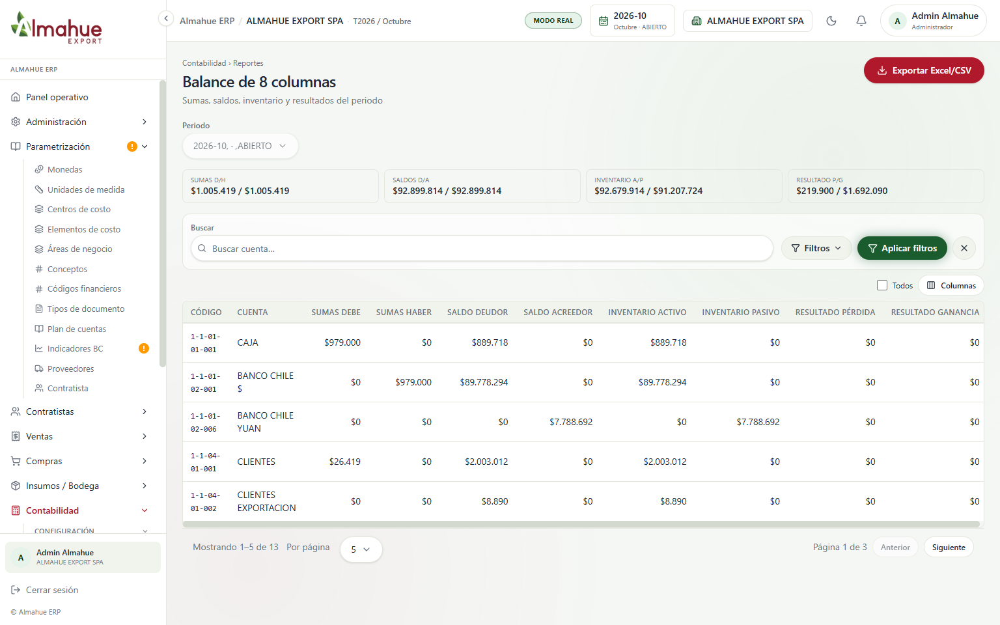
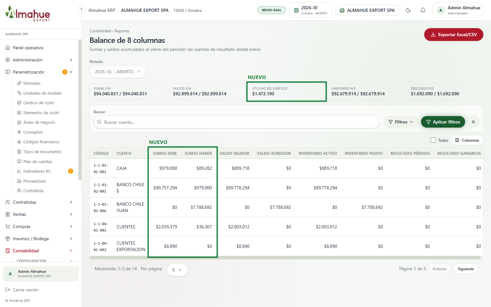
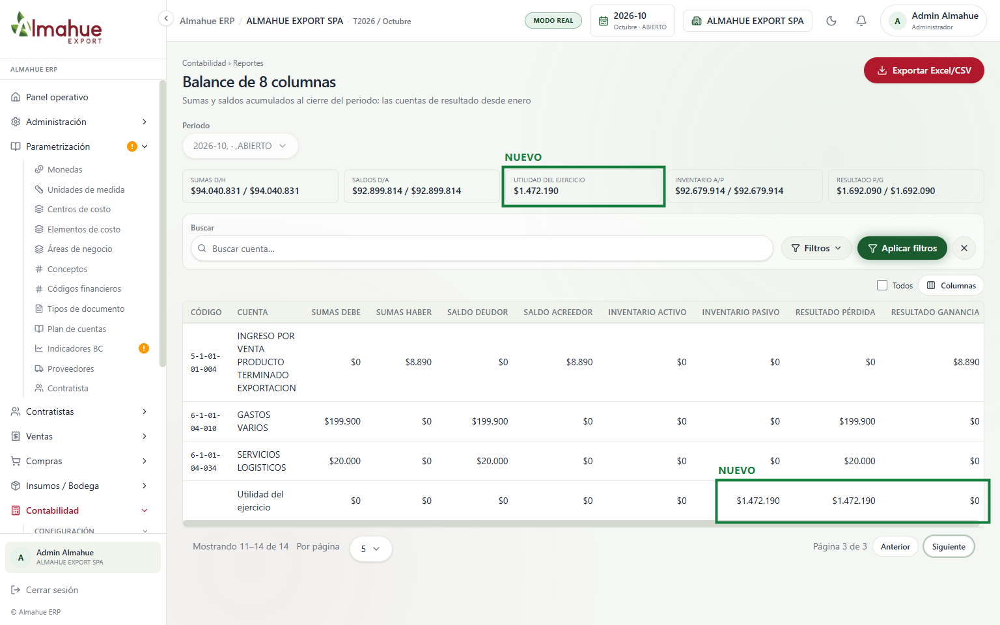
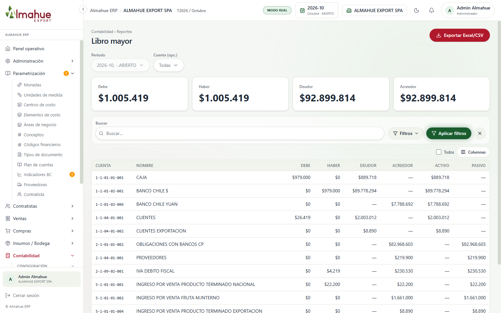
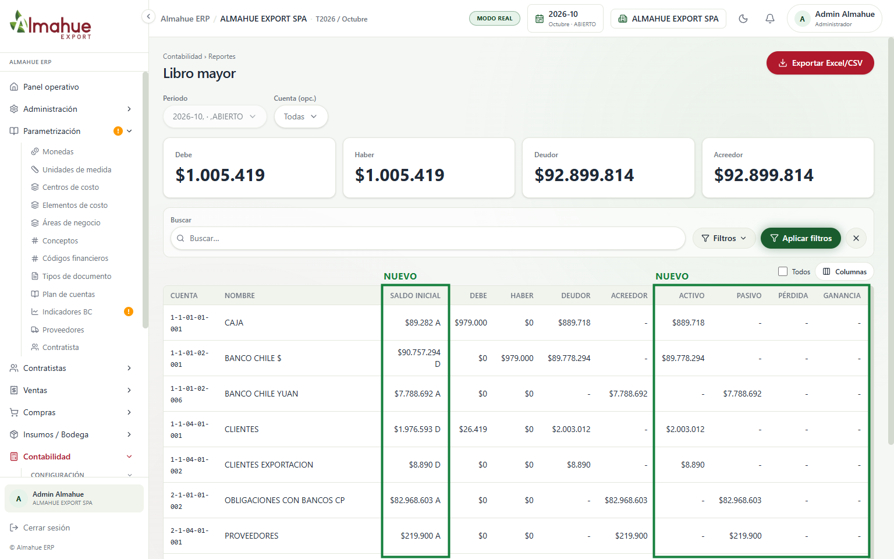
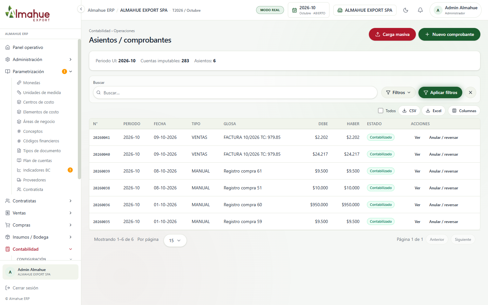
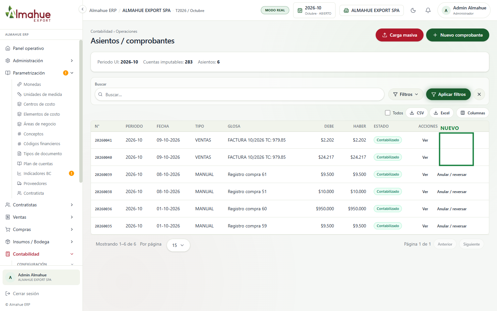
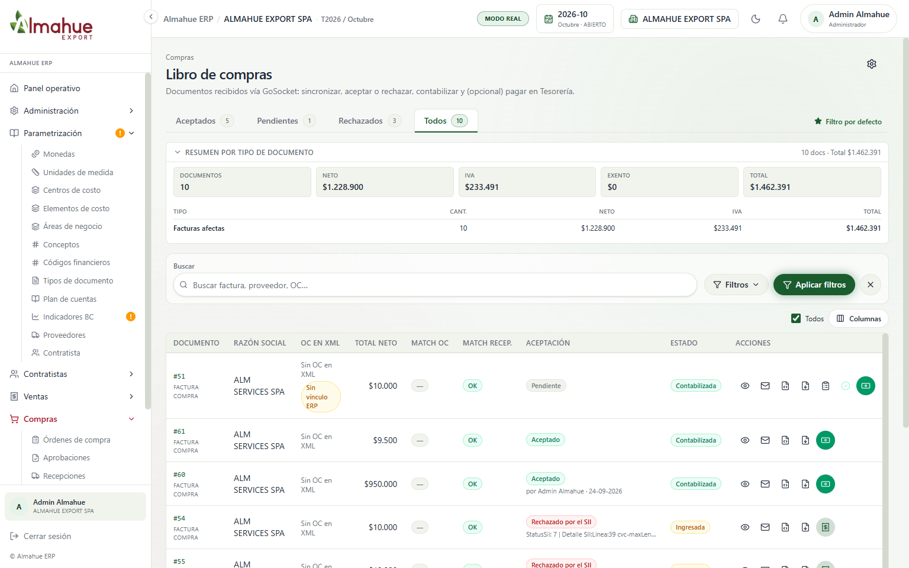
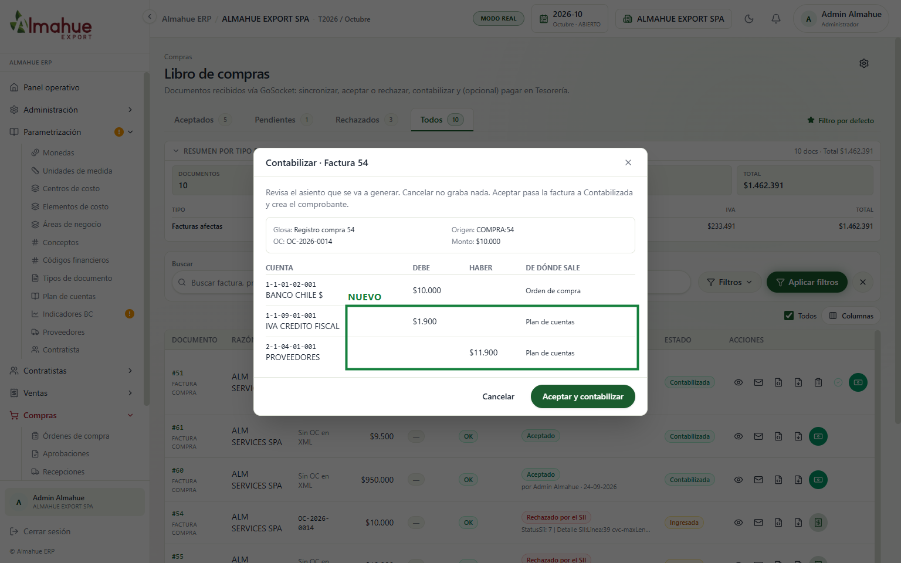

ALMAHUE EXPORT SPA, modo real, periodo 2026-10, ERP local, 13/10/2026. El recuadro verde y la etiqueta NUEVO están solo en la captura, no en el sistema. Un clic abre la imagen. La rueda o las teclas + y - hacen zoom. Izquierda y derecha cambian entre el antes y el después. Esc cierra.
Asientos del mes decía 2 y la base tiene 6 contabilizados en 2026-10. Ahora cuenta los asientos contabilizados del periodo de la sesión.
Las tarjetas son los reportes que existen: Balance de 8 columnas, Libro diario y Mayor por cuenta. Ver abre cada uno. Si debe y haber no cuadran en el periodo, la pantalla lo avisa.
No se apretó Exportar Excel ni Ver.
Contabilidad › Balance de 8 columnas
Antes

Después

Antes las sumas eran solo del mes y los saldos acumulados, así que no calzaban: Banco Chile $ mostraba sumas $0 / $979.000 y saldo deudor $89.778.294. Ahora las sumas son acumuladas al cierre del periodo (las cuentas de resultado desde enero) y cada saldo sale de sus sumas.
Inventario no cuadraba ($92.679.914 contra $91.207.724). La diferencia era el resultado del ejercicio: $1.692.090 de ganancia menos $219.900 de pérdida = $1.472.190. Ahora aparece como recuadro Utilidad del ejercicio y como fila al final, y el inventario cuadra.
Los asientos anulados entran junto con su reversa, así que suman cero (MJ, Reu2: la reversa es «la contrapartida para que la contabilidad me dé 0»).
No se apretó Exportar Excel/CSV.
Balance de 8 columnas, página 3: fila del resultado
Después

Sin antes: la fila no existía. «Utilidad del ejercicio» lleva $1.472.190 a Inventario pasivo y a Resultado pérdida, y así las dos parejas de columnas cuadran. También va en el Excel. Solo se usó Siguiente para cambiar de página.
Contabilidad › Libro mayor
Antes

Después

Antes Caja mostraba debe $979.000 y saldo deudor $889.718, sin explicar la diferencia. La columna nueva Saldo inicial ($89.282 A) la explica: es lo arrastrado desde antes del mes. Las cuentas de resultado arrancan en enero.
Las cuentas de ingreso quedaban en la columna Pasivo. Ahora Activo y Pasivo son de las cuentas de balance, y Pérdida y Ganancia de las de resultado, igual que en el balance (MJ, Reu4: «saldo deudor, acreedor, sea activo, pasivo, gasto, ingreso»).
No se apretó Exportar Excel/CSV ni se cambió de cuenta.
Contabilidad › Asientos / comprobantes
Antes

Después

Los dos asientos de venta (origen DOC:) ya no ofrecen Anular / reversar. Anularlos desde Contabilidad dejaba la factura viva en el libro de ventas, en el estado de cuenta y en el aging. En su detalle sale el motivo: se corrige con nota de crédito en Emitir DTE (MJ, Reu4: en el libro de ventas nada queda anulado, se corrige con NC). Lo mismo vale para el cierre de contratistas (TRASPASO-CTR:), que se reabre en Contratistas. La API también lo rechaza.
Al anular un asiento de compra, la factura vuelve a Ingresada y se descuentan su cuenta corriente y su aging. Si ya tiene pagos, no deja anular. La reversa lleva la fecha del original.
No se anuló nada para la foto. El detalle de la venta se abrió con Ver y se cerró: detalle del asiento 20260041.
Compras › Libro de compras › Contabilizar
Antes (lista)

Después (vista previa del asiento)

El asiento de compra iba gasto contra Proveedores por el neto, sin IVA: el crédito fiscal no se registraba y Proveedores quedaba $1.900 corto. Ahora lleva IVA crédito fiscal (1-1-09-01-001) al debe y Proveedores por el total (R1: «pongo ya el neto que son 1000 y el IVA que son 190»). Una factura exenta no lleva IVA y Proveedores va por el neto. Lo mismo aplica a la centralización de compras.
El asiento toma la fecha del documento, no la del día en que se contabiliza.
No se apretó «Aceptar y contabilizar». Para que se abriera el modal, la factura 54 se asoció un momento a la OC-2026-0014 y después se dejó como estaba, Ingresada y sin OC.
Pantallas sin cambio visible
Libro diario (antes, después): se ve igual. Ahora incluye los anulados junto con su reversa, que suman cero. En 2026-10 no hay anulados, por eso no cambia.
Traspaso contratistas (antes, después): se ve igual. Un traspaso anulado ya no bloquea volver a traspasar, y la vista previa también toma las proformas enviadas y facturadas, no solo las definitivas.
Periodos contables (antes, después): sin cambios en esta tanda.
Libro de compras, lista (antes, después): se ve igual. El cambio está en el asiento que genera, mostrado arriba.
Libro de ventas (antes, después): sin cambios. Una venta contabilizada se sigue corrigiendo con nota de crédito desde Emitir DTE, y por eso Contabilidad ya no la anula.
izquierda / derecha: antes y después. + y - : zoom. Esc cierra